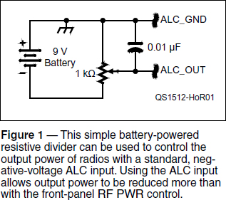
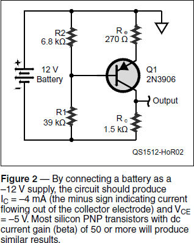
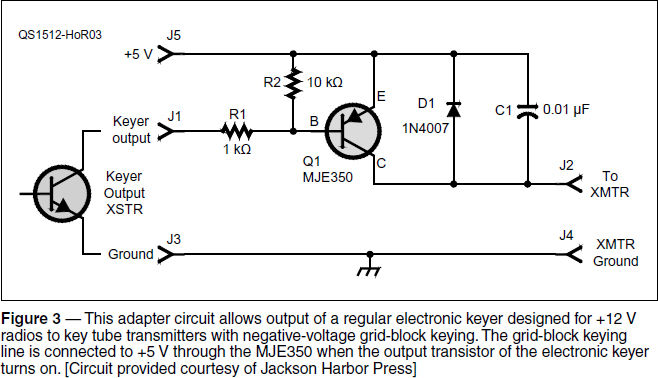
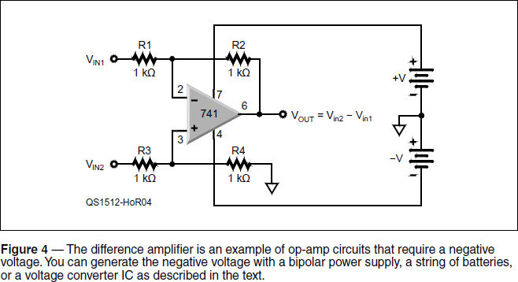

Experiment #155 — Negative-Voltage Circuits
It may come as a surprise in this 12-volt world, but not every circuit is powered by 13.8 ± 0.5 V dc. Negative voltages were quite common in the days of tubes, but today’s digital logic and analog circuitry mostly requires only one voltage polarity — positive. Is there nothing left “below ground?”
ALC Control
You don’t have very far to look for a circuit that depends on a negative voltage, and that is your radio’s Automatic Level Control (ALC) input. Just like the radio’s internal ALC system, an external amplifier generates an ALC signal to reduce transmitter power and prevent overdrive. The ALC signal is a dc voltage varying from 0 V (full power, no ALC action) to a few volts negative. For example, the ALC range of my TS-590S is 0 to –7 V. Armed with this knowledge, you can turn your 100 W radio into a milli-watter with the simple battery-powered circuit shown in Figure 1.

Set the 1 kΩ pot to about 500 Ω between the wiper and either end of the element. Connect a 9 V battery (paying careful attention to which terminal is positive or negative) across the element of the pot. (You can’t use a ground-referenced power supply for the 9 V battery!) The output ALC signal is created between the wiper of the pot and positive terminal of the battery, which is connected to the radio’s chassis ground. Use a voltmeter to verify that the ALC_Out signal is negative and about half of the battery voltage, then adjust the pot for an output of about –0.1 V. The 0.01 μF capacitor filters out any RF that might be picked up by the connecting cable.
Disconnect the battery and fashion a cable to connect the ALC_Out signal to your radio’s ALC input. (This might be a dedicated phono jack, but it’s probably two pins on an accessory connector.) Be sure the positive battery terminal will be connected to the radio’s common or ground pin. Reconnect the battery and turn on the radio. Set the radio for full power output, then generate a steady carrier level into a dummy load. Adjust the pot so that ALC_Out becomes more negative and output power from the radio should eventually drop. Generate some CW and adjust the pot until you have 5 W output. Voilà — you have a QRP rig. Or, you can keep going and see what you can work with 100 mW!
Un-common Emitter
The common emitter (CE) amplifier circuit from “Hands-On Radio” Experiment #1 makes another appearance in Figure 2 — almost!1 Look closely and you’ll see that Q1 is a 2N3906, the PNP twin of the common 2N3904. They have very similar specifications for gain, voltage and current rating, switching speed, etc. You’ll also notice that the battery polarity is inverted so the “top rail” is the circuit’s common.

Everything about this PNP version of the CE is inverted. Instead of pushing current into the base to turn on the transistor, in this circuit you pull current out of the base. The more current you allow to flow out of the base (by lowering the value of R1), the more IC will flow. Even the equations for gain and dc operating point are the same.
Wire up this circuit (use a battery or isolated power supply) and verify that IC is about –4 mA and the voltage from collector to emitter, VCE, is about –5 V. (The minus sign for IC indicates that current is coming out of instead of into the collector.) You can experiment with resistor values to see the effect changing R1 and R2 has on IC. In fact, building both the NPN CE circuit and the PNP CE circuit side by side is a good way to get more comfortable with PNP transistors.
Grid-block Keying
Many of us have electronic keyers that ground our rig’s positive-voltage keying input to turn on the transmitter. What about keying a vacuum tube rig? Many later model tube rigs used grid-block keying, in which a high negative bias voltage (–50 to –150 V) on a tube’s grid cut off plate current during non-transmitting periods. Grounding the negative voltage allowed plate current to flow, turning on the transmitter. This was no problem with a hand key, “bug,” or relay, but today’s solid-state keyers can’t handle negative voltage. What to do?
Chuck Olson, WB9KZY, of Jackson Harbor Press (wb9kzy.com/ham.htm), designed the circuit shown in Figure 3 to adapt the common positive-voltage keyer to grid-block vacuum tube circuits.2 In this circuit, the keyer’s output (usually an NPN transistor, as shown) is connected between J1 and J3. To key the tube transmitter, the keyer’s output transistor grounds the base of Q1 through R1, turning on the PNP MJE350, which is rated for the higher grid-block voltage. This connects J2, the radio’s grid-block input, to +5 V, turning on the transmitter. (Voltage at J2 is assumed to be negative.) R2 is a pull-up resistor that keeps the MJE350 turned off when the keyer transistor is off. C1 and D1 protect the transistor from transients and keep RF out of the circuit.

Bipolar Op-Amp Circuits
Another place you’ll find a requirement for a negative voltage supply is in op-amp circuits, such as the one shown in Figure 4. This circuit is from “Hands-On Radio” Experiment #3 — a difference amplifier with an output equal to the difference between Vin1 and Vin2. (All the resistor values must be equal for this to be true.) While the venerable 741 is shown on the schematic, any common op-amp will do the job at audio frequencies or below. The inputs can be dc, ac, or a combination of the two. It doesn’t matter if both input voltages are positive or negative or which is greater. (Just keep them between the power supply voltages to avoid damaging the op-amp.)

The output can be of either polarity so the power supply must supply both polarities. Figure 4 also shows a handy (and portable) means of generating a negative supply — splitting a set of batteries. A string of D-cell batteries will supply clean dc power for a long time at the low loads of most circuit experimenting. Use at least four cells for each power supply voltage to generate ±6 V. If you have a large multi-cell holder, you can create the circuit’s common voltage by soldering a wire to a bit of brass or copper shim and slipping it between adjacent cells. A pair of surplus rechargeable gel-cell batteries is a good choice, too.
Generating Negative Voltages
Batteries are terrific, but over the long-term, even a small current drain will deplete a good-sized battery. If you have a reliable source of positive voltage you can use a voltage converter IC and a couple of capacitors to create your negative supply instead.
The ICL7660 has been a staple of the analog designer for a long time, along with its many variations. Start by downloading and reading the ICL7660 data sheet from Maxim Integrated.3 Not only will you get a detailed description of how the IC works, but also plenty of interesting and innovative ways to use it.
The ICL7660 uses switched-capacitor technology to convert positive voltages to negative voltages, double a positive voltage, divide voltages, can be connected in series to create higher negative voltages, or connected in parallel to increase the available current.
If you build a simple negative voltage converter, it can be used as the power supply for the ALC power control circuit in Figure 1. Input power can be obtained from the radio’s +12 V supply. Place a Zener diode across the circuit’s output, in parallel with the 0.01 μF capacitor to limit the output voltage to the maximum for your radio. By packaging the circuit in a simple plastic container or enclosure, you create a handy power-control accessory for your station. Just right for the QRP ARCI’s “1000 Miles Per Watt” award — how low can you go?4
Notes
1All previous “Hands-On Radio” columns are available to ARRL members at www.arrl.org/hands-on-radio.
2Jackson Harbor Press sells the Keyall and KeyallHV kits if you prefer to purchase the components and pre-made PCB to make your own adapter.